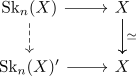

even spectrum has unique cw structure
Proposition
Let $X$ be an even spectrum. Then $X$ has a unique cw structure of a bounded below spectrum
Proof
use induction + stable cellular approximation

now $\mathrm{Sk}_n(X) \rightarrow X$ is an isomorphism on low homology and hence $\mathrm{Sk}_n(X) \rightarrow \mathrm{Sk}_n(X)'$ is an isomorphism on homology in low degrees. Moreover the homology of $\mathrm{Sk}_n(X), \mathrm{Sk}_n(X)'$ vanishes in high degrees, hence $\mathrm{Sk}_n(X) \rightarrow \mathrm{Sk}_n(X)'$ is a homology isomorphism. Therefore it is an equivalence of spectra (cf. homology functor is conservative on connective spectra).